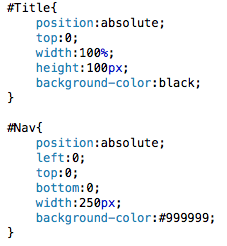
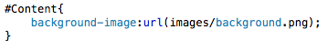
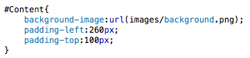

Web Site Design & Construction
The ability to add backgrounds to our divisions is one of the many fun features of using CSS. We can either add a block colour as our background, or we can use an image. I will be doing both on this page. Then we will go over margins and padding, because we will need them after out backgrounds are coloured.
Adding colours to our division background is as simple as adding colour to our text. Just with an extra word and a hyphen added in. It's the same principle, so I'm just going to go ahead and add colour to our title and navigation divisions. Black and Grey should work.
Colours are so easy to set it's almost a joke. Speaking of which... 
Background images are slightly more tricky, but still quite simple if you remember your background-repeat attribute. Luckily for us, we want it to repeat as much as possible. But there are other settings for that attribute (here). Pick an image to use as your background and find its location. Then, using the background-image attribute apply the following url(LOCATION OF IMAGE HERE) to your content division, so your end product should look something similar to this:
My background image attribute, which will fill the screen. 
That's our backgrounds sorted. Now, if you check your page it should be nice and pretty. I mean, some of your content will be hidden behind your title and navigation, but we'll sort that in a moment.
Margins and Padding are two opposite ends of the same scale, they both deal with how much room there is at the edges of each container. Margin governs how much space there is between the edges of the container and the other elements, and padding controls the amount of space between the edges and the content within the container. Using this information we are now going to make our website look damn sexy. Well, ish. The first thing I want to do, and it's been killing me for most of the last 4 pages, is centre our main container division so that it's central within the browser. To do this we set its margin attribute to 0 auto. Do this now. Check your page. Isn't that much better?
The next thing we should do is add a top margin to our navigation division. This is because, at the moment, it is overlapping our title div. We know the height of that division, so we should set the margin-top of the navigation division to the height of our title. Check your page again, looking better isn't it?
The final piece of positioning we want to do is to make our content fit within the section we've allocated for it. To do this we should set the padding of the top and left to the height of the title and the width of the navigation, respectively. So we'll go ahead and do this, and your final content section should look something similar to this:
My content CSS. It's all shiny and well positioned. 
Next »Check your web page again. Everything should now be positioned properly. See, it's not that difficult when you know the tricks. The next page will go over borders and we'll reskin those horrible anchor tags in our navigation bar. Then we're done in terms of content and design. With only a little bit of clever stuff to be added with JavaScript.